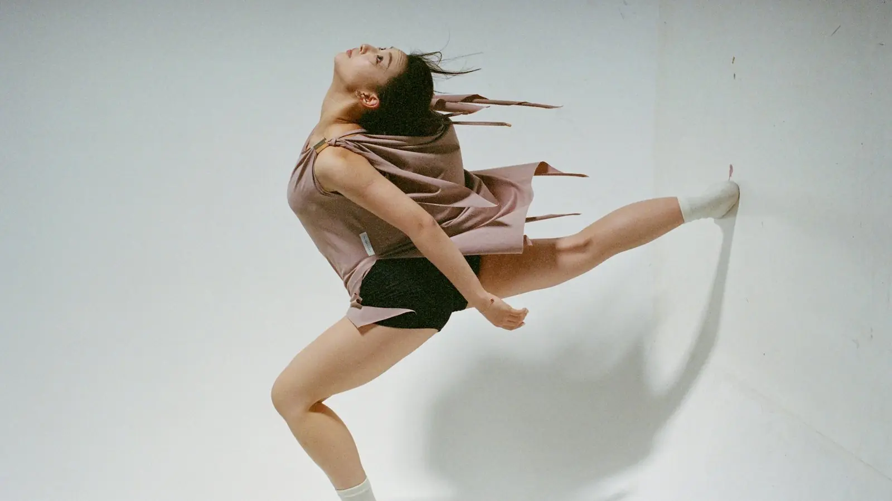
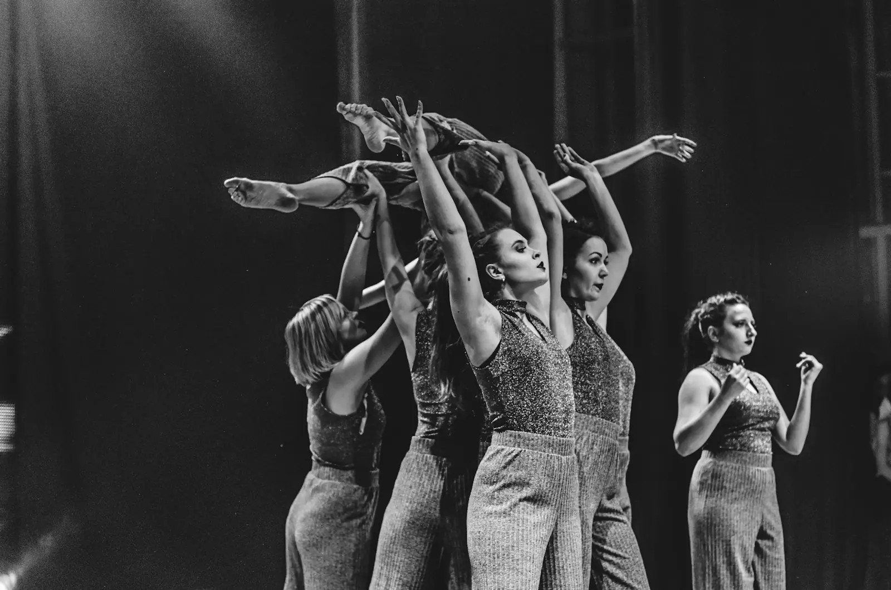
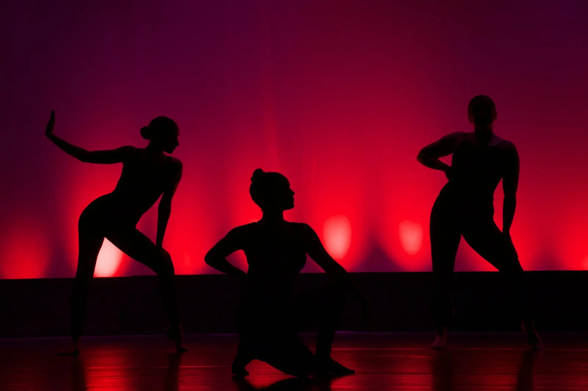
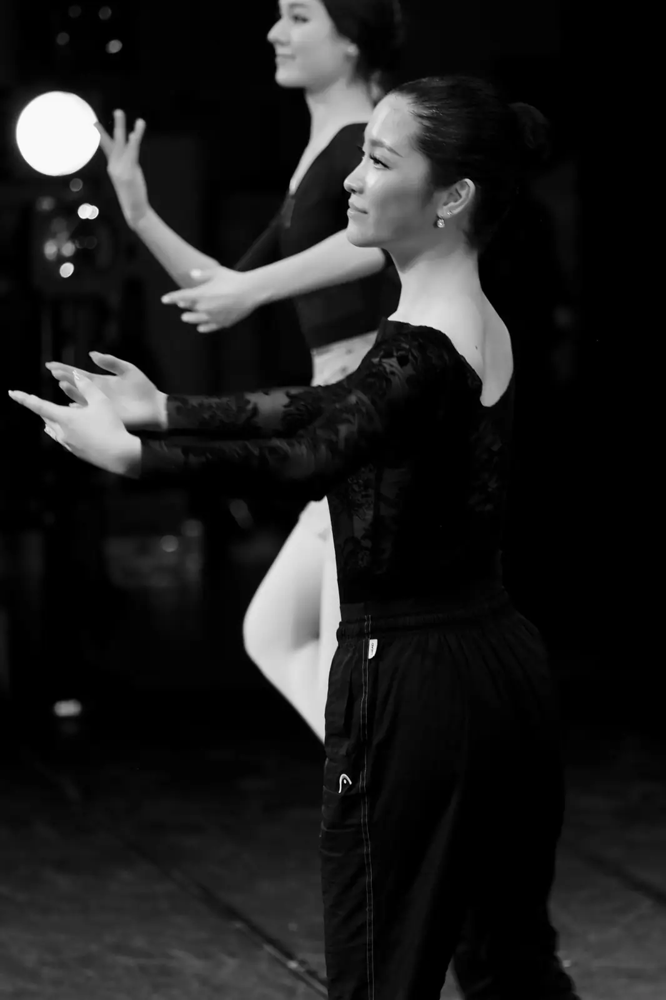
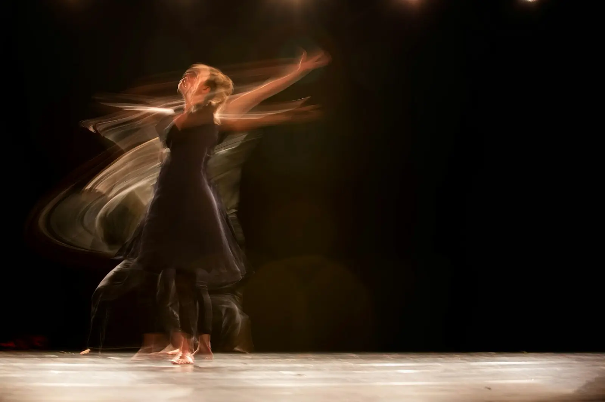

גוףמה זז
איזה חלק מוביל: ראש, חזה, אגן, יד. האם כל הגוף זז יחד או חלק אחד לבד (בידוד). איזו צורה הגוף יוצר: ישרה, מעוגלת, מפותלת, א-סימטרית. בהיפ הופ: פופ חזה, גל בזרועות. במודרני: ספירלה, קונטרקשן.

גרפיהביוונית, choreia היא ריקוד ו-graphein היא כתיבה. כוריאוגרפיה היא כתיבה של ריקוד: לבחור תנועות, לסדר אותן בזמן ובמרחב, ולתת להן משמעות.


רקדנית יודעת לבצע תנועה. כוריאוגרפית מחליטה איזו תנועה, ולמה. ההבדל הוא כמו בין מי שקוראת שיר בקול לבין מי שכתבה אותו.
בכל רגע בקטע, מישהי החליטה:
באימפרוביזציה, ובהיפ הופ קוראים לזה פריסטייל, ממציאים את הריקוד בזמן אמת. בכוריאוגרפיה קובעים אותו מראש, כך שאפשר לחזור עליו בדיוק, ללמד אותו לאחרות ולבצע אותו יחד. רוב הכוריאוגרפיות נולדות מאימפרוביזציה: מנסים, מצלמים, ושומרים את מה שעבד.
על במות של להקות מחול ובתיאטרון מוזיקלי, בתחרויות ריקוד ובמופעי סוף שנה, בקליפים ובהופעות של זמרים, בסרטים, וגם באתגרי ריקוד ברשתות. ריקוד קצר שכולם מעתיקים ברשת הוא כוריאוגרפיה לכל דבר: מישהי כתבה אותו.
בהוראת מחול מחלקים כל תנועה לארבעה מרכיבים. מי שמבינה אותם יכולה לקחת תנועה אחת ולהפוך אותה לעשר.
איזה חלק מוביל: ראש, חזה, אגן, יד. האם כל הגוף זז יחד או חלק אחד לבד (בידוד). איזו צורה הגוף יוצר: ישרה, מעוגלת, מפותלת, א-סימטרית. בהיפ הופ: פופ חזה, גל בזרועות. במודרני: ספירלה, קונטרקשן.

רמות: גבוה, בינוני, נמוך. כיוונים: קדימה, אחורה, לצד, באלכסון. מסלולים על הרצפה, וגודל התנועה: קטנה וקרובה לגוף או רחבה עד הקצה. כאן נכנסים גם המערכים על הבמה.
קצב, ספירה, האטה והאצה, עצירות. האם התנועה נמצאת על הפעמה, בין הפעמות, או בניגוד למוזיקה. גם שקט הוא זמן. ההבדל בין רוטינה טובה למצוינת נמצא פה.
חד או זורם, כבד או קל, ישיר או מתפתל, מתפרץ או מבוקר. אותה תנועה בדיוק נראית אחרת לגמרי באנרגיה אחרת. רודולף לאבאן, תאורטיקן מחול, הגדיר שמונה איכויות כאלה. הן מופיעות בפרק המודרני.

בחרו תנועה פשוטה, למשל להרים יד ימין למעלה בארבע ספירות. עכשיו שנו בכל פעם רק חומר אחד:
הרימו את המרפק במקום את היד. הרימו את שתי הידיים. הובילו עם הכתף.
עשו את זה בכריעה. עשו את זה לצד ולא למעלה. עשו את זה בתנועה ענקית ואחר כך זעירה.
בספירה אחת במקום ארבע. בשמונה. עם עצירה באמצע.
כמו מכה. כמו נוצה. כמו מישהו מושך אתכן בחוט.
עכשיו יש לכן עשר תנועות שנולדו מאחת. ככה כוריאוגרפים עובדים: לא ממציאים כל תנועה מאפס, מפתחים.

כוריאוגרפיה בנויה כמו שפה. יש יחידות קטנות שמתחברות לגדולות.
תנועה קצרה ומזוהה שחוזרת לאורך הקטע ומשתנה, כמו משפט מוזיקלי שחוזר בשיר. הקהל מזהה אותה כשהיא חוזרת, וזה נותן לקטע אחדות.
רצף תנועות עם התחלה, אמצע וסוף, כמו משפט בשפה. בהיפ הופ ובפופ המשפט הוא בדרך כלל שמינייה אחת או שתיים. במודרני הוא יכול להימשך כמו נשימה ארוכה, בלי קשר לספירה.
כמה משפטים יחד, שמתאימים בדרך כלל לחלק בשיר: פתיחה, בית, פזמון. לכל קטע יש אופי, מערך ואנרגיה משלו.
הסדר של הקטעים. מבנים נפוצים: א-ב (שני חלקים שונים), א-ב-א (חוזרים להתחלה בשינוי), רונדו (א-ב-א-ג-א, החלק הראשון חוזר כמו פזמון), נושא ווריאציות, ומבנה סיפורי שבו הקטע מספר עלילה. בפרק איך יוצרים כל אחד מהם מוסבר עם דוגמה.
| נושא | היפ הופ | מחול מודרני |
|---|---|---|
| איפה נולד | במסיבות רחוב בברונקס, ניו יורק, בשנות השבעים. במקביל נולדו סגנונות רחוב בקליפורניה. | על הבמות של אירופה ואמריקה, בתחילת המאה העשרים, כמרד בבלט. |
| מוזיקה | היפ הופ, פאנק, R&B, אפרוביט, פופ. רוקדים לתוך הקצב ולתוך המילים. | כל דבר: מוזיקה קלאסית, אלקטרונית, קולות, שקט. לפעמים הריקוד והמוזיקה בכלל נפרדים. |
| יחס לקצב | מדויק ומורגש: באונס, היטים על הסנר, ספירה בשמיניות. | גמיש: לפעמים בספירה, לפעמים בנשימה, לפעמים נגד המוזיקה. |
| הגוף | ברכיים רכות, מרכז כובד נמוך, גרוב, בידודים, טקסטורות. | עמוד שדרה גמיש, נשימה, משקל, ספירלות, נפילות והתאוששות. |
| הרצפה | בעמידה, חוץ מברייקינג שבו עובדים הרבה על הרצפה. | חלק מהריקוד: מתגלגלים, מחליקים, נשענים עליה. |
| לבוש | נעלי ספורט, בגדים נוחים ורחבים. הסטייל הוא חלק מהאמירה. | לרוב יחפות, בגדים צמודים או זורמים שמראים את קו הגוף. |
| איך לומדים | מהבסיס (גרוב, באונס, רוק), בשיעורים ובסייפרים, ומצפייה ברקדנים אחרים. | בטכניקות מוגדרות כמו גרהם, הורטון, לימון ורליס, ובאימפרוביזציה. |
| איך יוצרים | ממוזיקליות: מקשיבים לשכבות בשיר ומתרגמים אותן לגוף. פריסטייל הוא מקור החומרים. | ממשימות ומרעיונות: תמונה, מילה, שאלה. מאלתרים ובוחרים. |
| בקבוצה | קרו: יוניסון חזק, ריפלים, מערכים מהירים, תמונות קבוצתיות. | משקל משותף, מגע, קנון, קבוצה שזזה כמו גוף אחד. |
ובכל זאת, הגבולות מטשטשים. רקדניות היום לומדות את שני הסגנונות, וסגנונות כמו "קומרשיאל" ו"ליריקל היפ הופ" לוקחים מכל עולם את מה שהם צריכים.